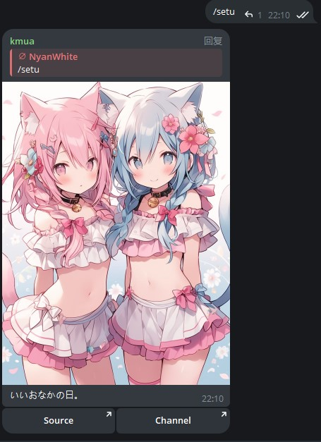
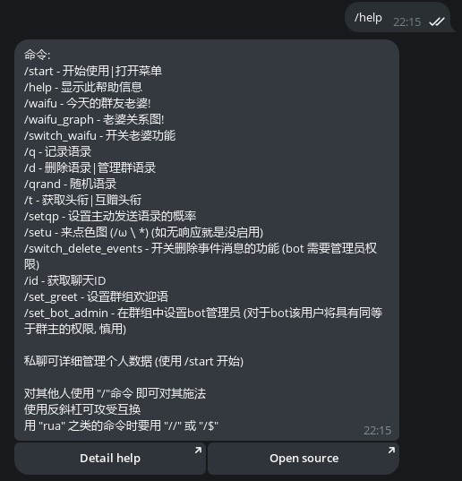
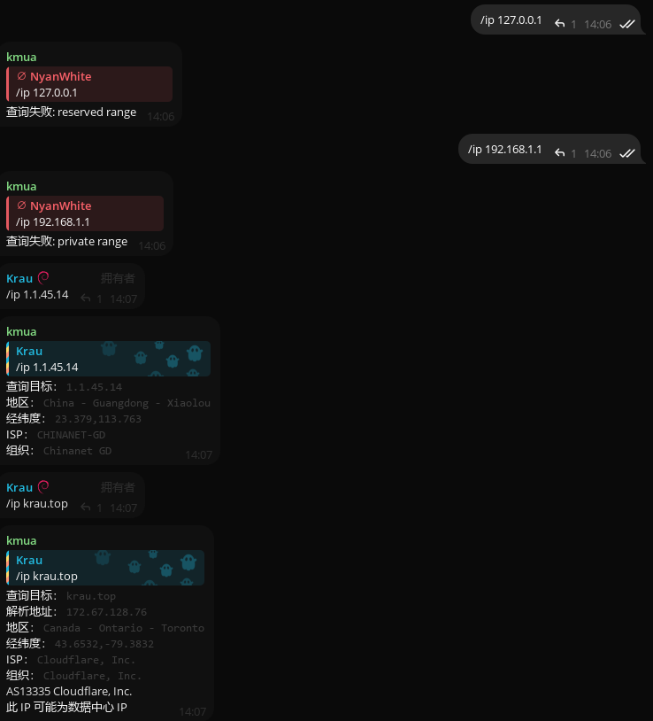
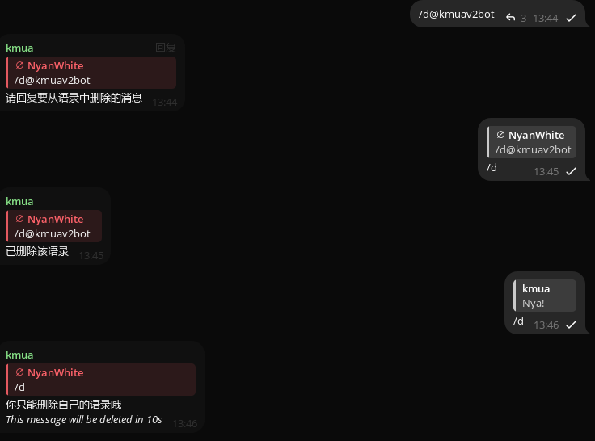
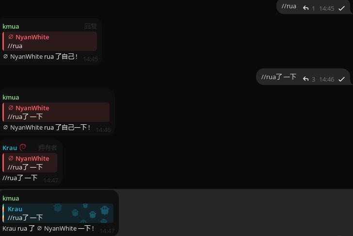

详细帮助
~~怎么没人帮窝写文档a~~
现在有了（
目前已知的支持用户组命令
使用右侧栏进行关于命令的细节查看
还有更多吗？
/start
提供最初始的帮助菜单
开源仓库位置 完整的帮助
个人数据 以及被Quote的内容管理
抽老婆管理和一个Nya~
每一个小功能内非常简单这边就不加说明了（
/t
常规格式：/t 头衔内容
- 简单快速易上手
但有一点要注意 这个功能在对群组所有者使用时是无效的
- 不仅可以用于自己 还能赋予他人 一般通过回复 /t 内容用法
/setu
顾名思义 随机涩图 但是抽取范围有限 来源频道见按钮中的Channel
左侧按钮即可打开图片来源

这一项命令在私聊中似乎是无效的
/help
生成一条带有所有命令的简要参数信息 帮助用户更快上手
左侧按钮可跳转至帮助页面 右侧则为开源仓库地址

即使在群内 本条消息生成的内容也无任何差别
- 使用如同Minecraft格式的 /help
不影响任何输出
/q
用法和Quoty Bot是一样的 但不存在转发给bot时自动生成 对消息回复/q即可
在对所q消息置顶之后 kmua便会回复被/q的句子一句随机的应答语 并生成一张带有所q消息内容的图片
其实 即使不对消息进行回复 kmua也会贴心的回复你/q的正确用法
请回复一条消息
/waifu
抽取群老婆！抽取后则本日内结果不变
左为移除右为结婚
/id
本部分无图例
获取当前对话的ID和请求的用户ID 还可通过回复消息内容
获取消息发送者的ID（回复 /id）
或许有用处？
/qrand
随机抽取语录进行发送（范围为整个群中）
在此前需要曾有已被记录的名言 否则将不进行任何输出
/waifu_graph
渲染群内的waifu关系图 如果数量较多则需要较长的等待时间
此外 稍候的提示语是随机的 每一次均有不同
/ip
简单易用易上手 /ip空格后接所需要请求的网址或ip
所请求的内容不需要带任何协议头 也就是例如 tg:// http:// https:// ftp:// localhost:32767
这些都不需要 只需后面的即可
e.g:/ip google.com

/d
删除已有的语录记录
简单易上手 只需要回复需要删除的语录发送/d即可
该功能主要依靠消息发送者作为标记 便只能删除自己的语录
也就是如果自己把别人的消息存入语录中 自己是无法通过/d去删除的（非常重要）
但别人能够/d自己的消息移除语录
无论回复平常的消息亦或者是他人被记录的语录 均会回复 只能删除自己的语录哦
但如果处于管理员状态下 /d的作用域会扩大一些 略有不同 在下方的管理员命令里了解更多

//rua /$rua
为防止与别的命令互相冲突或是消息变命令而被过滤掉
两//和/$依旧可以发出行为命令 任意内容都可
中文行为命令下不需要// 因为这并不会被标识为一条命令
//与/$的作用相同 且$不能使用别的符号进行代替否则将无效化
使用本命令需要对消息进行回复 或是只发送不回复 这样所指对象将是自己本身
未来将加入使用提及下的行为命令
reply: //

目前已知的管理组命令
/setqp
格式: /setqp <0,1>
设置群内 bot 主动发送随机语录的频率，参数为0~1之间的概率
设置为1则是只要有人说话就主动发言，设置为0.01则是1%概率，设置为0等于关闭此功能。
/switch_waifu
在群内开关老婆功能
/switch_delete_events
在群内开关删除事件消息的功能 (bot 需要删除消息权限)
/switch_unpin_channel_pin
开关取消频道消息置顶的功能 (bot 需要置顶权限)
/set_greet
设置群组欢迎语
/set_bot_admin
格式: /set_bot_admin <user_id>
在群组中设置bot管理员 (对于bot该用户将具有同等于群主的权限, 慎用)
/leave_chat
格式: /leave_chat <chat_id>
离开群组，同时删除群组数据（无法挽回的操作）
/clean_data
手动清理数据, 并刷新抽老婆数据
/status
查看bot运行状态
/clear_inactive_user_avatar
格式: /clear_inactive_user_avatar <days>
清理 days 天内不活跃用户的头像缓存
/error_notice
开启/关闭错误通知